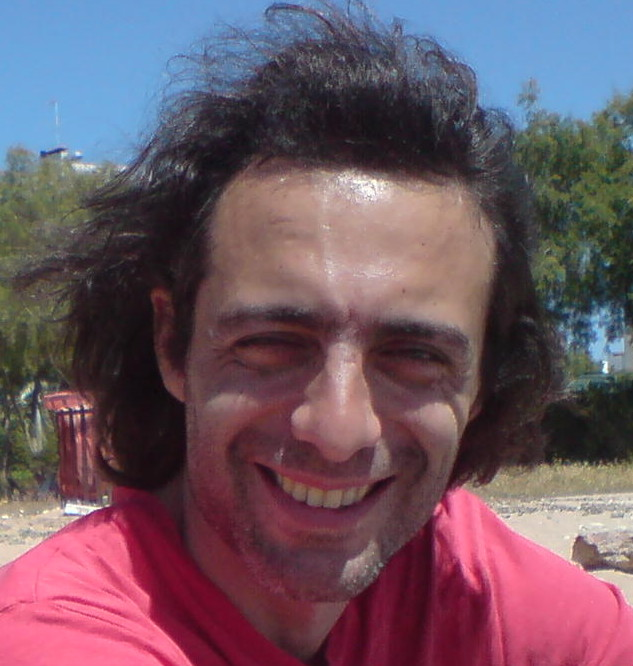

Resume

Personal Information
| Full Name
| Konstantinos Stavrou
|
| Place of Birth
| Ioannina, Greece
|
| Date of Birth
| 1977 March 13
|
| email
| dasoda.hae@aol.com
|
I was born in Ioannina and lived there since I was 18 years old. Then I moved
in Thessaloniki where I stayed for 13 years. The last 10 years I live in Athens.
Computing is a hobby for the last 29 years. Nowadays, I am trying to become a Web
front-end developer. I study mostly online, using:
But as much as importand is self-studying there are times for collaboration. So I
am attending a seminar at SocialHackersAcademy
using tools like the following to communicate and learn:
Education - qualifications
- Attended 2nd High School of Ioannina and graduated in 1994
- First Certificate in English - University of Cambridge
Work Experience
- Worked as a laborer for IKEA at the store warehouse (Thessaloniki)
- Worked at the café in the photografy museum of Thessaloniki
- Worked in the production department of the International
Thessaloniki Documentary Festival and of the International Thessaloniki
Film Festival.
- Worked for Gnet Internet Café (Thessaloniki)
- Worked as a telephone assistand for Link2U on behalf of P&G (Athens)
- Worked in ELTA Courier